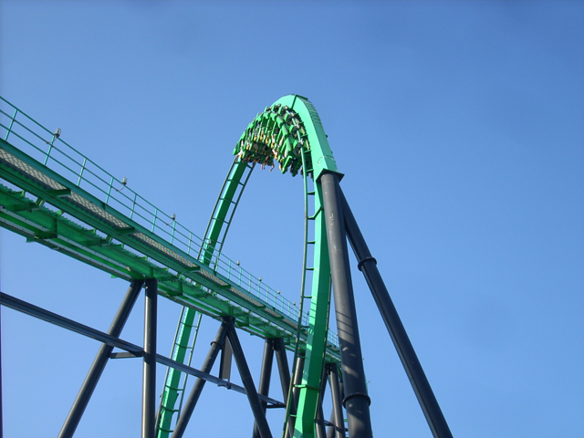
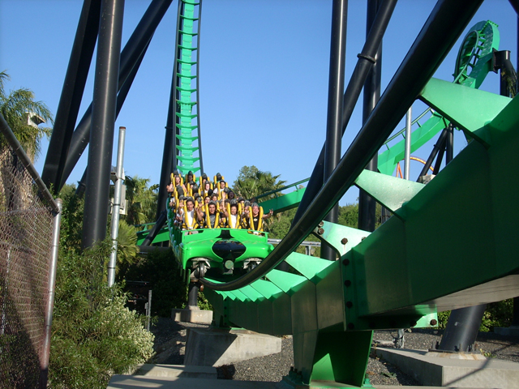
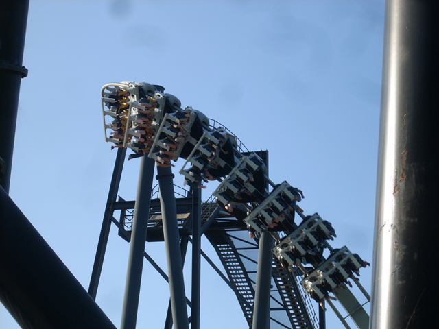

PACKED SFMM Saturday
We're here at Six Flags Magic Mountain. We just went for a couple hours assuming it would be fine, but it ended up being PACKED!!!! Oh yeah, whats wrong with this picture?
This is what I meant when I said it was crowded.

Well, Obviously with crowds like that, Riddlers is going to have a line out the door.

But through the magic of Single Riders Line, We were able to ride two times in a row!
 Here's a look at Riddlers fake helix of death.
Here's a look at Riddlers fake helix of death.

Umm, with crowds like today and no fastpass, Batman is a definite "HELL NO!" for today.
Thomas Town has improved since Westcoast Bash.
Maybe that's why it's so damn crowded today.
If you shall f**k with me, than I shall f**k you too!
Tatsu. Definetly a "HELL NO!" for today.
This is Cody. Cody has Lemonade. Cody is about to ride Viper. Cody must chug it before he gets on the ride. Cody suffered from serious brainfreeze.
When was the last time you saw Goldrusher have a LINE!!!!
I got plants!
 FAKE HELIX OF DEATH AT NIGHT!!!!
FAKE HELIX OF DEATH AT NIGHT!!!!
NA NA NA NA NA! WE DON'T HAVE TO WAIT BECAUSE WE HAVE FREE FASTPASEES!!! HA HA HA HA HA HA!!!!!!!
 Hopefully it won't be this bad when I return two weeks from now. Oh yeah, we had fun on Goliath.
Hopefully it won't be this bad when I return two weeks from now. Oh yeah, we had fun on Goliath.
Home